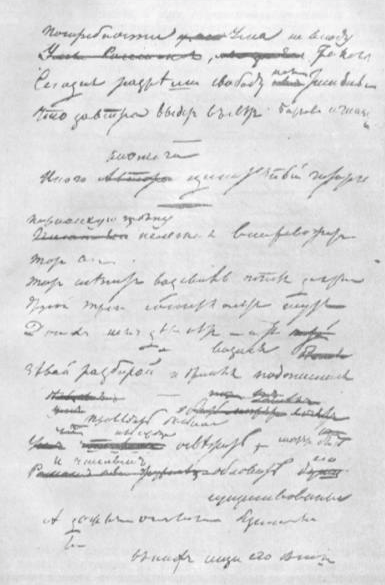

Интерпретация образа Чацкого в постановках русских театров
Теоритическая часть
Жемчужина русской драматургии
Комедия «Горе от ума»-одна из подлинно реалистических комедий в русской литературе. В произведении все представлено очень живо, незабываемо. Однако в наше время читатели с трудом воспринимают «Горе от ума» как комедию. Это объясняется тем, что главный герой Чацкий не является комическим персонажем. Причина его разногласий и споров с фамусовским обществом очень серьезны, а монологи Чацкого, которые обличают «прошедшего житья подлейшие черты» , заглушают комедийное звучание произведения. В «Горе от ума» подняты злободневные общественные вопросы того времени: о крепостном праве, о воспитании, о просвещении, о государственной службе, о рабском подражании всему иностранному. Реализм произведения выявляется и в принципах изображения персонажей. У Грибоедова все персонажи-характеры, яркие, живые, неодномерные. Персонажи комедии являются точными подобиями живых людей. Автор с горькой иронией раскрывает в репликах героев бедственное положение народа и страны, где угодливость Молчалина, карьеризм и глупость Скалозуба, бюрократизм Фамусова, пустословие Репетилова предпочтительнее ума и здравомыслия Чацкого.
Существует гипотеза, что замысел произведения появился у А.С. Грибоедова в 1816 году. Исследователи творчества писателя предполагают, что замысел был рожден во сне. В начале 1822 года Грибоедов прибыл в Тифлис из Персии. Его определили в ставку главноуправляющего Грузией генерала А.П. Ермолова по «дипломатической части». Туда, на Кавказ, весной 1823 года приехал и В.К. Кюхельбеккер. Общаясь с ним, Грибоедов создавал первые два акта «Горя от ума». С ним он уехал в долгосрочный отпуск в Москву. Поселившись на лето в тульском имении Бегичевых, драматург переписывал начало комедии и сочинил третий и четвертый акты. Эта рукопись сохранилась и получила название «Музейный автограф». Однако уже в 1824 году возник новый вариант произведения. В то время Грибоедов уехал в Петербург и поселился у своего родственника, поэта А.И. Одоевского. По дороге из Москвы в Петербург Грибоедова, по его признанию, «осенило», и он придумал «новую развязку» комедии – сцену разоблачения Молчалина в глазах Софьи. В Петербурге он продолжал совершенствовать комедию и к осени закончил. Создавая «Горе от ума» как сатирическую комедию нравов, Грибоедов использовал в качестве образца для подражания пьесу Мольера «Мизантроп». Образ «злого умника» связывает главного героя, Альцеста, с главным героем комедии «Горе от ума», Чацким. Оба персонажа открыто и яростно обличают лицемерие и другие пороки общества, в котором живут. Однажды А.С. Грибоедов был приглашён драматургом Н. И. Хмельницким для прочтения своей новой пьесы в его доме, в узком кругу друзей, среди которых были актёры И. И. Сосницкий, В. А. и П. А. Каратыгины и драматург В. М. Фёдоров. Перед самым началом чтения с В. М. Федоровым у Грибоедова произошла ссора: Фёдоров сравнил ещё не прочитанную комедию со своим произведением «Лиза, или Последствия гордости и обольщения». Это задело А.С. Грибоедова, так что он заявил, что читать при Фёдорове не будет. Н.И. Хмельницкий не смог замять ситуацию, и Федоров был вынужден оставить общество: «Драматургу из-за своей несчастной драмы пришлось сыграть комическую роль, а комик чуть не разыграл драмы из-за своей комедии.»1
Уже с лета 1824 г. А.С. Грибоедов пытался напечатать комедию. Однако это драматургу не удалось, хотя он был лично знаком с великим князем Николаем Павловичем (будущим императором Николаем I) , с генерал-губернатором Петербурга Милорадовичем, с министром Ланским и другими видными сановниками. Тогда же в департаменте друга Грибоедова, крупного чиновника и драматурга А.А. Жандра, комедия была переписана в множестве экземпляров и разошлась по всей России. Эта содержащая множество помарок рукопись, с которой составлялись списки, сохранилась и получила название «Жандровская рукопись». Но удача все-таки улыбнулась Грибоедову: Ф.В. Булгарин собрался издавать театральный альманах «Русская Талия на 1825 год». В конце 1824 года альманах вышел в свет, и в нем была комедия «Горе от ума», но в неполном виде. Произведение Грибоедова сразу стало событием русской культуры, распространившись среди читателей в рукописных списках, число которых приближалось к книжным тиражам того времени. Распространению списков содействовали декабристы. Уже в январе 1825 года И.И. Пущин привез Пушкину в Михайловское список «Горя от ума». Впоследствии Пушкин вспоминал: «Его рукописная комедия: «Горе от ума» произвела неописанное действие и вдруг поставила его наряду с первыми нашими поэтами». Следы правки сохранились в рукописи, которую Грибоедов, уезжая в 1828 году в Персию, подарил Булгарину. На ней есть надпись: «Горе мое поручаю Булгарину. Верный друг Грибоедов. 5 июня 1828 года». 21 августа 1833 г. министр С. С. Уваров обратился к царю по вопросу публикации комедии, и разрешение на печать было дано. В 1833 г. пьеса "Горе от ума" была впервые напечатана отдельным изданием в Москве в типографии Августа Семена при Императорской медико-хирургической академии. В 1839 г. вышло второе, петербургское издание, но с правками цензуры. Несмотря на то что в 1833 г. в печать вышло первое издание пьесы, спрос на книгу оказался выше тиража. Люди продолжали снимать друг у друга копии "Горе от ума", потому что книгу было трудно купить. Кроме того, в копиях сохранялись места, удаленные цензурой. Пьеса "Горе от ума" распространялась в копиях до 1862 г., когда император Александр II наконец разрешил печатать комедию в полном виде, в котором она дошла до наших дней.
"Главная роль, конечно, - роль Чацкого, без которого не было бы комедии, а, была бы, пожалуй, картина нравов".(И.А. Гончаров «Мильон терзаний») Император панически боялся проникновения в Россию революционных идей. Комедия «Горе от ума» построена так, что о «веке нынешнем», об идеях социально - политических преобразований, о стремлении к духовной и политической свободе, о новой морали в произведении говорит лишь Чацкий. Образ Чацкого определяет конфликт комедии, обе ее сюжетные линии. Пьеса писалась во времена стремления молодых людей типа Чацкого нести в общество новые идеи и приоритеты. В монологах и репликах героя, во всех его поступках выразился дух свободной жизни. Чацкий - тот новый человек, который несет в себе идею жизни, цель которой – свобода. Его идейные убеждения рождены духом перемен, тем «веком нынешним», которые пытались приблизить лучшие люди России. «Его идеал свободной жизни определителен: это свобода от всех…цепей рабства, которыми оковано общество, а потом свобода – вперить в науки «ум, алчущий познаний», или беспрепятственно предаваться «искусствам творческим, высоким и прекрасным», - свобода служить или не служить, жить в деревне или путешествовать»…- так объясняет Гончаров в статье «Мильон терзаний», какое содержание вкладывал Чацкий в понятие «свобода». В образе Чацкого ограждены черты декабриста эпохи 1816-1818 годов. В это время российский гражданин передовых убеждений не стремился к активной революционной деятельности, к свержению монархии. Прежде всего, он желал исполнить свой долго перед Отечеством, желал честно служить ему. Именно поэтому за три года до описанных в комедии событий, Чацкий расстался с Софьей и отправился в Петербург. Стремление Чацкого - служить отечеству, "делу, а не людям". Но Государству не нужно самоотверженное служение, оно требует прислуживания. А герой совершенно против прислуживания: «Служить бы рад, прислуживаться тошно». И Чацкий оставляет столицу. Он пытается служить иначе: «славно пишет, переводит». Персонаж ненавидит все прошлое, в том числе «рабское, слепое подражанье» перед всем иностранным, угодничество. Просвещение, за которое ратует Чацкий, вызывает бурный гнев со стороны фамусовского общества. Просвещение для эпохи Чацкого тесно связано с гражданским воспитанием, важнейший его элемент-проповедь свободы. Вот почему так негодует свет. И такие намеки разбросаны по всему произведению.
Успех комедии, занявшей прочное место в ряду русской классики, во многом определяется гармоничным соединением в ней острозлободневного и вневременного. Сквозь нарисованную картину русского общества преддекабристской поры(волнующие умы споры о крепостничестве, политических свободах, проблемы национального самоопределения культуры, образования и прочего, колоритные фигуры того времени, узнаваемые современниками и т.д.) угадываются «вечные темы»: конфликт поколений, драма любовного треугольника, противоречие личности и социума. «Горе от ума»- пример художественного синтеза традиционного и новаторского: отдавая дань эстетике классицизма(в комедии присутствуют три единства: единство места, времени и действия; условные амплуа, говорящие фамилии, любовная интрига и прочее), автор «оживляет» схему взятыми из жизни конфликтами и характерами, вводит в комедию лирическую, сатирическую и публицистическую линии. Точность и афористичность языка пьесы (многие фразы комедии стали в дальнейшем афоризмами), использование вольного стиха, который передает стихию разговорной речи, неоднозначность финала (в конце комедии так и не ясно- победитель Чацкий или побежденный, какова будет судьба Софьи и т.д.) позволили тексту комедии сохранить остроту и выразительность
Чацкий – новый тип человека, действующий в истории русского общества. Главная его идея – гражданское служение. Такие герои призваны вносить в жизнь общества смысл, вести к новым целям, предлагать новые идеи. Самое ненавистное для Чацкого – рабство во всех его проявлениях. Все окружающее нуждается, по мнению персонажа, в тотальном переустройстве. Однако из соображений цензуры автор позволяет герою лишь намекнуть на свои идеи. Столкновение Чацкого с обществом Фамусова – не бытовое, не частное. Оно носит всеобщий характер. Свобода во всем должна прийти на смену иерархической упорядоченности прежней жизни. Чацкий, желая воплотить свои идеи в жизнь, делает несколько практических шагов. Результатом этих действий оказывается его «связь с министрами», о которой упоминает Молчалин. Ведь это не что иное, как участие героя в реформах власти, которые не состоялись. Чацкий умеряет свой реформаторский пыл и уезжает за границу не только в поисках ума, но и от бессилия что-либо сделать в сложившейся ситуации. Его ни что больше не связывает с родными местами, вероятно, он не приехал бы вовсе, если бы в его жизни не было Софьи. Отъезд ведь тоже можно считать за форму протеста. После скандала в доме Фамусова, Чацкий вряд ли еще когда-нибудь появится в России.
Теоритическая часть
Интерпретация образа Чацкого в постановках русских театров
В печать, а затем и на театральные подмостки пьеса попала не в оригинальном, а измененном виде. Поэтому авторский замысел образа главного героя был сложен в понимании многих современников. Образу Чацкого было присуждено амплуа резонера. Однако это противоречит сложности и многогранности сценического характера, созданного Александром Сергеевичем Грибоедовым. Принято считать, что впервые величайшая комедия была поставлена на сцене в 1827 году в Сардарском дворце в Ереване. На этом спектакле присутствовал сам автор произведения. Однако комедия была представлена не в полном виде. Зрители увидели лишь некоторые сцены из произведения. На профессиональной сцене «Горе от ума» впервые поставили в Санкт-Петербурге и также в виде отдельных отрывков. Это произошло в декабре 1829 года, уже после смерти А.С. Грибоедова, в бенефис актрисы М.И. Валберховой. Был сыгран I акт комедии, начиная с 7-го явления. В Москве отдельные сцены и акты из произведения были поставлены в 1830 году. В частности 30 января 1830 года I акт «Горя от ума» был исполнен в бенефис. М.С. Щепкина в московском Большом театре, где великий актер впервые выступил в роли Фамусова. По поводу этого спектакля первый в России энциклопедический журнал под названием «Московский Телеграф» (1830, № 3) писал: «После жалкого представления комедии Мольера «Скупой» была выставлена интермедия-дивертисмент под названием «Маскарад», которая была украшена новыми сценами из трагедии «Ермак» и из бессмертной комедии «Горе от ума». Подобные сему интермедии неизбежны в бенефисах; хорошо по крайней мере, что актёры стараются приправить их чем-нибудь привлекательным... Но сии отрывки, выставленные на сцене, имели одинаковую участь с альманачными отрывками. Они мало имели действия на зрителей, которые как будто из вежливости похлопали некоторым остроумным стихам Грибоедова. Последовавшие затем танцы и пение были гораздо лучше приняты, несмотря на то, что мы уже пресытились оными».1 В этом же году сначала в Петербурге, а затем в Малом театре в Москве зрителями был увиден III акт комедии, который получил название "Московский бал". Помимо действий, прописанных в произведении, в постановку была включена французская кадриль и различные музыкальные номера. Полностью комедия «Горе от ума» была поставлена 26 января 1831 года в Петербурге. Но редакция была изменена цензурой. Сохранилась афиша первой постановки комедии А. С. Грибоедова 1831 года:

На протяжении последующих лет комедия неоднократно была поставлена на сценах столичных театров. Но для провинциальных театров постановка комедии «Горе от ума», к сожалению, оставалась запрещенной до 1863 года. Роль Чацкого примеряло на себя большое количество актеров. Однако не всем удалось оставить свой след в сценической истории произведения. Из-за вмешательства цензуры, что влекло за собой изменение текста и реплик персонажа, в процессе перевоплощения актеры испытывали некоторые трудности в передаче подлинных идей, сущности образа и особенностей характера Чацкого. Приведу пример: знаменитый актер XIX века Василий Андреевич Каратыгин. Считается, что он был первым, кто создал роль Чацкого. Однако критики, видевшие исполнение Каратыгина, имели много претензий к актеру. Известный журналист, первый историограф русского театра, Пимен Николаевич Арапов (1796 г.-1861г.) писал: «Несколько раз видели мы нашего незабвенного В. А. Каратыгина в роли Чацкого, и должны сознательно сказать, при всём нашем уважении к его таланту, что дивный наш трагик не удовлетворял нашим требованиям... его голос, дикция и представительность были слишком резки для Чацкого и колоссальный его рост не подходил на сцене под вседневное одеяние, т. е. фрак или сюртук.»2 Другой критик, Фаддей Венедиктович Булгарин (1789 г.-1859 г.) дал также неодобрительную оценку исполнению роли Чацкого Василием Каратыгиным: «…Он все сбивался на героя! Чацкий, молодой, образованный человек, благородный душою, видит странности и пороки…и просо насмехается над людьми, которые не заслуживают уважения. Досада пробивается иногда сквозь насмешку. Но тон его должен быть насмешливый, соединенный с некоторою благородною гордостью, а не трагический! Г. Каратыгин, напротив того…смотрит на всех с высоты Олимпа, грозно и величаво, и читает тирады (сатирические выходки на наши нравы) как приговоры судеб; трагическим тоном произносит стихи легкие, комические…» (газета «Северная Пчела» 1831, № 31) Еще один величайший актер, которому, по мнению многих критиков, не удалась роль главного героя комедии А. С. Грибоедова – Павел Степанович Мочалов (1800 г.-1848 г.)

Когда Мочалову поступило предложение сыграть Чацкого, он долго думал над тем, браться ли за эту роль. Причина его долгих сомнений заключалась в том, что Мочалов не играл ранее роли такого плана. Образ Чацкого был новым для актера. В «Театральных воспоминаниях» режиссера Н. И. Куликова можно увидеть переживания П. Мочалова по поводу воплощения образа Чацкого: беседуя с актрисой Марьей Дмитриевной Львовой-Синецкой, Мочалов сказал: «А знаете ли, что из всех моих ролей я ни за одну так не боялся, как за эту?.. Вот, например, с самого первого действия я чувствую себя не в своем амплуа, не на своем месте: эта развязность Чацкого, игривая болтовня, смех, его язвительные сарказмы, блестящие остротой с неподдельными веселостью и шуткой,— да я никогда подобных ролей не играл и не умею играть!»3 В итоге, после того, как актер воплотил на сцене образ главного героя комедии, его исполнение подверглось сильнейшей критике. Актер показал не того человека, которого описывал в своем произведении А.С. Грибоедов. По мнению многих критиков, Мочалов сыграл человека не из светского общества. Игра актера была наполнена чрезмерной чудаковатостью, которая несвойственна Чацкому А. С. Грибоедова. В литературно-общественном журнале «Телескоп» был опубликован отзыв на игру Павла Мочалова, сильно критиковавший актера: «Не обременяем уже его бесполезными требованиями ловкости и развязности, свойственной светскому образованному человеку; но не можем не пожаловаться, что в роли Чацкого он как будто нарочно уволил себя от всех светских приличий, предписываемых людскостью. Хлопать себя по ногам, закидывать назад голову и, наконец, так небрежно разваливаться на креслах - нестерпимо! Заметим также, что и костюм его на вечере был не очень приличен»4 В дальнейшем роль Александра Чацкого исполняли такие актеры, как Сергей Васильевич Шумский, Иван Васильевич Самарин, Александр Павлович Ленский, Василий Пантелеймонович. Далматов, Мамонт Викторович Дальский, Федор Петрович Горев. Конец XIX века и начало XX века были знамениты яркими исполнениями роли Чацкого такими актерами, как Александр Иванович Южин и Василий Иванович Качалов. В советские времена в интерпретации образа Чацкого произошли некоторые изменения. Например, в Смоленском театре актеры, исполнявшие роль главного героя комедии «Горе от ума» (В.С. Несельский в 1937 г. Н.А. Покровский в 1939 г.), воплотили Чацкого на сцене, как человека, верящего в наступление светлого будущего, и человека, сильного духом, который способен бороться за это будущее. В советский период театральные режиссеры приписывали образу Чацкого особый героизм. В подтверждение приведу высказывание известного советского публициста, критика и поэта Юрия Кублановского: «Любое переосмысление этого образа в сторону дегероизации выглядело как оглушительная дерзость, ежели не крамола, и уже в силу этого было обречено на успех. В ту пору постановщикам было, так сказать, с чем бороться - со школьным идейным стереотипом, что сильно облегчало задачу». Критик с уверенностью придерживался мнения о том, что комедия А.С. Грибоедова - это не только актуальное, поднимающее множество проблем произведение, а еще и комедия на все времена. Произведение А.С, Грибоедова не относится только к какой-то определенной жизненной обстановке, оно имеет способность обновляться и приобретать новый смысл от поколения к поколению. Конечно же, каждая постановка комедии и каждое исполнение роли Чацкого по-своему своеобразны. Так как же менялась интерпретация образа главного героя комедии «Горе от ума» с годами? Как воспринимали образ Чацкого актеры, примерявшие на себя данную роль? Давайте обратимся к мнениям критиков на несколько постановок великого произведения А.С. Грибоедова.
Постановка Московского Художественного театра 1906 года была очень яркой и надолго запомнилась зрителям. Роль Александра Чацкого исполнял великий русский актер Василий Качалов
Василий Качалов в роли Чацкого, Московский Художественный театр.
Актер блестяще исполнил роль главного героя комедии «Горе от ума», по мнению многих зрителей и критиков. В своем исполнении он наделил Чацкого нежностью и пылкостью. Чацкий Качалова совсем юн, ему 19-20 лет от силы. Он веселый, остроумный, очень эмоциональный и безумно влюбленный юноша. Чацкий в исполнении Качалова талантлив и перспективен. Однако своим исполнением актер показал Чацкого не как крупного деятеля, который может бороться с такими, как Молчалин и Фамусов, а как человека, еще не сложившегося полностью. В нем только зарождаются задатки борца. В подтверждение я могу обратиться к высказыванию М.А. Волошина, великого русского поэта и критика. В своих критических замечаниях Волошин писал по поводу спектакля: « …посреди этих исторических фигур вставал один цельный и полный характер. Это был Чацкий — Качалов. Г-н Качалов создал нового и вполне законченного Чацкого. Роль Чацкого всегда смущала и ее исполнителей и литературных критиков. Благодаря своим длинным монологам и обличительным тирадам Чацкий носил смешанный характер и декламирующего первого любовника, и морализирующего Стародума пьесы. У всех и всегда Чацкий говорил от лица автора, и эта патетическая проповедь в кругу безусловно чуждых ему и глупых людей делала его смешным и заставляла сомневаться в его собственном уме. Качалов понял и провел роль иначе. Его Чацкий — очень молодой человек, почти мальчик. Ему девятнадцать-двадцать лет. Его многословие, его горячность, его отчаяние, его обличения, смешные в устах зрелого мужа, каким мы привыкли видеть Чацкого на сцене, вполне естественны, искренни и вызывают наше глубокое сочувствие в устах этого юного-юного мальчика… Если мы представим себе всех этих мрачных героев, говорящих торжественные слова, в их истинном масштабе и возрасте, то они снова получат для нас неизъяснимую прелесть искренности и молодости. Чацкий в исполнении Качалова становится благодаря такому пониманию самым жизненным и привлекательным лицом всей комедии, как ему и подобает быть. В первой сцене он врывается радостный, смеющийся, разгоряченный долгожданным свиданием. Он болтает как мальчик. У него нет ни злоязычия, ни злобы, ни обличения. Он возбужден, он радостен, он острит, он вспоминает, он хочет показаться очень интересным. Он сам же нервно хохочет над своими остротами… В разговоре с Фамусовым, со Скалозубом, в разговорах на балу в Чацком все время виден этот радостный мальчик со сверкающими глазами, который по-детски возмущается московскими мнениями, проповедует свои теории, говорит дерзости старшим. Это его первый день возвращения в Москву, и многословие его оправдывается его возбужденностью и обилием впечатлений. При этом надо сказать, что Качалов умеет читать стихи. Он не ищет ненужного реализма. Он не старается скрыть рифмы и растрепать размер, он их чуть-чуть оттеняет, и в его устах грибоедовский стих звучит со всей полнотой, и ухо, изощрившееся на современных созвучиях, любуется красотой этих неустаревших рифм. Последнее действие Качалов проводит совершенно оригинально. Чувствуется, что Чацкий устал, и что ему хочется спать, и что он оскорблен по-детски, глубоко, до слез, что все ему кажется каким-то диким и невозможным сном, все эти старики, зловещие старухи, московские болезни, любовь Софьи к Молчалину. И тут эти темные сени старого дома, и голубой рассвет за окном, и усталость, смыкающая веки, и тяжесть, которая клонит эту милую белокурую голову. То, что Чацкий один оставался в пьесе характером, а все остальные были фигурами, это можно было принять вполне. Он один реальное лицо среди этих призраков. В постановке «Горя от ума» с одинаковой яркостью сказались все достоинства и недостатки его. Недостаток индивидуализации ролей, в котором обычно упрекают Художественный театр, ограничен и лежит в самой основе его доктрины… Роль же Чацкого получила свое новое и, думается, окончательное толкование для нашего времени.»5 Качалов, действительно, показал искреннего, молодого и простого Чацкого. У него совершенно не было желания как-либо поменять убеждения Фамусова. Чацкий Качалова пытался донести свои идеи и взгляды, кажущиеся ему правильными. Зритель увидел не величественного, но при этом трогательного Александра Чацкого. Свою точку зрения могу подтвердить, обратившись к отзыву еще одного театрального критика, Сергея Глаголя из журнала «Московский еженедельник». Критик писал: «Общепринятое исполнение роли создает из Чацкого фигуру героя, рыцаря без страха и упрека и, благодаря этому, делает из него один из тех положительных типов, которые вылезают из всего остального, перестают быть живыми людьми и исполняют роль манекенов, нужных лишь для того, чтобы вложить в их уста речи автора… Но так ли это все? Не впадаем ли мы в ошибку, одевая «героя» непременно в какие-то романтические доспехи, и не окажется ли он большим героем, если он будет обыкновенным человеком? Художественный театр еще раз ответил на это утвердительно, и Чацкий — Качалов совсем не «пятьдесят третья карта в колоде». Он молод, удивительно искренен, и прост, и весел. Он сеет свои остроты так весело, почти шутливо, что вы понимаете, почему его выслушивают и Софья, и ее отец. Он просто высказывает свои взгляды, которые кажутся ему такими ясными и простыми, что даже сам смеется остроте своих эпиграмм. Только задетый за живое в своем чувстве к Софье, он меняется; охваченный подозрениями, он становится желчным и едким, в свои остроты он вливает яд, и, наконец, в последний момент, обиженный, оскорбленный и совершенно разбитый, он бросает Софье горькие и незаслуженные упреки. Таков Чацкий — Качалов. Несомненно, он потерял кое-что как «герой». Его филиппики потеряли в силе. Это — не грозные и едкие обличения перед публикой всей выведенной перед нею среды. Это — не автор, вышедший на подмостки вместе с Фамусовыми, Скалозубами, Загорецкими и пр. Это — не Грибоедов, обличающий перед зрителем выведенных им действующих лиц. Но зато это действительный Чацкий, это — живой человек, вышедший из той же окружающей его среды, воспитанный в доме Фамусовых и влюбленный в Софью. Он — не гроза, разразившаяся над гнилым болотом, и не победитель; он — побежденный… Он не возбуждает восторга, но зато пробуждает в душе искренние, сочувственные слезы. В конце третьего акта он так захватывает зрителя, что на момент даже забываешь — в театре ли ты, и если вас охватывает при этом глубокое сочувствие его оскорбленной душе, а не одно только презрение ко всему окружающему, то я не знаю, что лучше. Обличение фамусовской среды мне решительно не нужно; все это давным-давно и всем известно и вошло даже в прописи, но драма живой человеческой души мне всегда близка, она захватывает меня…»6 Однако помимо положительных отзывов о спектакле были и те, которые сильно раскритиковывали исполнение Качалова.
Русский театральный критик Николай Ефимович Эфрос (1867 - 1923)
Русский театральный критик Николай Ефимович Эфрос (1867 - 1923) высказал свое мнение в журнале «Новый путь»: «А г. Качалов — может быть, потому, что под бременем ответственности очень волновался, — на протяжении двух актов никак не мог найти своих, обычно так искренних, прочувствованных, от души идущих интонаций, не мог привольно раскрыть душу и ее обаятельную игру. Точно он чувствовал себя неловко и в чудаковатых камзолах, и в грибоедовских стихах. И искрящееся веселье первой встречи с любимой девушкой не искрилось, и порывистая молодость не была ни порывиста, ни молода. Был ясно виден замысел, он понимался, но не воспринималось его выполнение. Драма чувств не налаживалась. Только в объяснении Чацкого с восхваляющей жалкие добродетели Молчалина Софьей, в этом единственном кусочке пьесы, где психолог властно взял верх в Грибоедове над сатириком, — и в Качалове взял верх артист. Стало живо, жизненно, драматично. Волна бала не могла не смыть настроения, и «французик из Бордо», несмотря на все усилия жить, чувствовать, болеть, был все-таки резонерским монологом, великолепным по многим интонациям, но ничего не прибавляющим к впечатлениям от «драмы». Опять заговорила душа, зазвучал миллион терзаний в последней отповеди и зря любимой Софье, и всему фамусовскому. Это было красиво. В голосе артиста столько прелестной музыки, в манере всегда столько благородства. Они дали полный успех. Но та личная драма, которую театр и артист хотели поставить в красный угол, и от этого выиграла мало; впечатление, которого ждали, не выкристаллизовалось с полною определенностью. Эта часть задачи так и осталась не разрешенной.»
В 1998 году состоялась премьера спектакля «Горе от ума» Олега Меньшикова. Эта постановка в корне отличалась от всех предыдущих. Спектакль имеет совершенно другую энергетику, в нем добавлено много нового. Сам Олег Меньшиков был не только режиссером спектакля, но и исполнителем роли Чацкого. Постановка вызвала множество обсуждений со стороны зрителей и театральных критиков. В отличие от постановок начала XX века спектакль Олега Меньшикова имел даже другой ритм и атмосферу. Он был более живой и приближенный к нынешним временам. За иную и даже современную подачу комедии, а в особенности, интерпретацию образа Чацкого, постановка была раскритикована прессой. Хотя с другой стороны, существовало мнение о том, что во время постановки зрительный зал осыпал аплодисментами А.С. Грибоедова, незримо присутствующего на спектакле. Так каким же предстал Александр Чацкий в исполнении Олега Меньшикова? Олег Меньшиков представил зрителям Чацкого, который по своей натуре смелый человек. Чацкий Меньшикова прямолинеен, остроумен, обаятелен, в его интонациях даже присутствует сарказм. Он не боится высказывать свое мнение и, не боясь, говорит то, что думает. Именно поэтому Чацкий Олега Меньшикова отличается от Чацкого начала XX века. По моему мнению, Олег Меньшиков сыграл Чацкого именно нашего времени. Его Чацкий свободный, раскованный и открыто любящий человек. Олег Меньшиков смог сыграть трагедию чувств, ему удалось показать одиночество гения и просто талантливого человека в обществе, наполненном пошлостью и обыденностью.
Олег Меньшиков в роли Чацкого, антрепризная театральная компания «Театральное товарищество 814», 1998 г.
Обратимся к мнениям некоторых театральных критиков. Российский критик Нина Агишева в статье «N приходит в режиссуру» писала: «Меньшиков - это, может быть, последний романтический герой русской сцены, способный заставить зал рыдать и от того, что "судьи кто?!", и от отсутствия на земле места, "где оскорбленному есть чувству уголок". Но актер, он же режиссер, хочет другого - чтобы зарыдали из-за его неразделенной любви, его отвергнутого чувства к Софье. Он совершенно прав: играть любовь Чацкого сегодня гораздо интереснее, чем его словесный бунт против фамусовской Москвы - все смертельно устали от устных разоблачений всех мастей.»8 Другой театральный критик Юрий Кублановский в журнале «Вечерний клуб» (№ 43, 29 октября 1998 г) писал: «Чацкий Меньшикова не "декабрист", но и не нелепый чудак - а живой человек из крови и плоти, в котором, как и в каждом из нас, много чего намешано. И эти составные его натуры находятся в ситуации пограничной: пафос и комизм, лиризм и ядовитость, доброта и кипучее возмущение. …Чацкий Меньшикова ускользает от однозначной твердой характеристики, но это не неудача, а замечательное решение: он заставляет полюбить себя; Меньшиков очеловечил Чацкого, и здесь его большое актерское достижение. «Горе от ума» - редкое явление на современных подмостках. Это спектакль, рождающий плодотворный подъем духа, которого нам так не хватает».9 Также я могу привести в пример отзыв великого актера, народного артиста РСФСР Сергея Юрьевича Юрского (1935 г.- 2019 г.), который сам исполнял роль Александра Чацкого в постановке 1962 года в Большом Драматическом театре имени М. Горького. Актер говорил: «Если бы моя рецензия на меньшиковскую постановку должна была бы уложиться в лаконичную формулу, то я бы сказал, что это умный спектакль, в котором не хватает горя. И я не вижу в том недостатка, а вижу как раз то колоссальное изменение времени, которое в нём отразилось. Новое поколение людей, артистов, художников воспринимает жизнь радостней и спокойней, менее пессимистично, чем наше, более олимпийски. Это поколение не хуже и не лучше нашего, оно - новое. Их отношение к жизни не носит того ущербного характера, который не только сидел в нас, но который мы ценили и даже пропагандировали. Здесь нет цинизма ни в отношении к людям - персонажам, ни в отношении к пьесе, ни в отношении к зрителю. Нет богохульства, глумления, столь распространённого в современном театре… Меньшиков сыграл в Чацком Олега Меньшикова - талантливого, разностороннего, успешного европейского артиста». Но, к сожалению, несмотря на свою большую популярность, постановка Олега Меньшикова ушла с театральных подмостков в 2000 году по неизвестной причине.
Следующая постановка комедии «Горе от ума», которую я буду рассматривать – это спектакль Малого театра, режиссером которого выступил театральный деятель, педагог Сергей Женовач. Премьера постановки состоялась в 2000 году в Государственном Академическом Малом театре. Малый театр никогда не отступал от своих традиций. Репертуар этого театра состоит только из классических произведений. И если какое-либо произведение выходит на подмостки Малого театра, оно играется в оригинальном виде, то есть текст не дополняется никакими репликами, режиссеры не вносят какие-либо новшества в подачу постановки и так далее. То же самое случилось и с постановкой «Горя от ума». В отличие от спектакля Олега Меньшикова, постановка Сергея Женовача сохранилась в оригинале, и даже костюмы полностью соответствовали эпохе, описанной в комедии. Роль Чацкого исполнял и исполняет до сих пор актер Глеб Подгородинский.
Глеб Подгородинский в роли Александра Чацкого, Государственный Академический Малый театр
В отличие от Чацкого Олега Меньшикова, исполнение Глеба Подгородинского не вызвало сильных дискуссий. Некоторое время его даже сравнивали с Чацким Меньшикова. Для того чтобы понять и вникнуть, какие же эмоции вызвала эта интерпретация образа Чацкого у зрителей и театральных критиков, давайте обратимся к мнению критика Павла Руднева: «Природа не изменила Подгородинскому и в этой роли. Его Чацкий тих, почти невзрачен — одетый во все черное, он выглядит темным пятном, тенью на однотонном фоне сценических рам. Его не слушают, избегают, у него нет никаких шансов на успех. Благодаря этой неэффектности, незвонкости Чацкий Подгородинского кажется, вопреки всем теориям, умным: он говорит дело. Чацкий — не из этого мира. Все в нем выдает этакого «репатрианта», давно не видевшего России, ходящего бледной тенью по солнечной праздничной Москве, и выдает его, пожалуй, словоблудие — три-четыре слова в обмен на одно — так много и так впустую говорят люди, долго не произносившие родные слова... Он в России — иностранец, немножко «идиот», князь Мышкин, представлявший себе Россию как мечту. Он — больше, чем соотечественники, — болеет за судьбу Родины. Самым сильным монологом в исполнении Подгородинского неожиданно зазвучит «Французик из Бордо, надсаживая грудь...» Садясь на стул и глядя прямо в зал, он с глубоким, почти суицидальным отчаянием произносит: «Москва и Петербург — во всей России то, / Что человек из города Бордо, / Лишь рот открыл, имеет счастье / Во всех княжен вселять участье...» Государственник Чацкий (схожий здесь с государственником Грибоедовым), думающий и знающий о внешней и внутренней политике России больше, нежели о законах поведения в обществе, не узнает в Москве Москву, как в Софье не видит былой любви. Он видит рыхлую, вялую, ничтожную землицу, где все — чужое, не наше. Здесь Сергей Женовач продолжает тему своего «Русского света», последней части трилогии об «Идиоте», — и там и здесь в финале говорится об особом пути России, о патриотизме, о русском свете, которого не находят в России Чацкий и Грибоедов, но уже после них находит Достоевский.»10 («Независимая газета» Павел Руднев) Приведу в пример еще одно мнение о данной постановке, которое немного отличается от предыдущего. Это отзыв театрального критика Веры Максимовой из газеты «Век»: « …очевидно и то, что большой и сложный спектакль пока еще весь в становлении и колебании, разрывы и „швы“ в нем заметны и не преодолены. Неудивительно, что новый режиссер нашел контакт с молодыми исполнителями (ему послушными, им увлеченными). Удивительно, что его поняли и приняли Мастера и Корифеи старейшей национальной сцены; что в больших и малых ролях он ни в чем не утеснил, не ограничил их самобытности, яркости, природного актерского „своеволия“… Известно, что режиссер не любит категорических и агрессивных концепций на сцене (тем более социальных, к которым все его поколение относится скептически). Известно, что лучшие его работы говорят не только о великой сложности жизни, многопричинности, но и случайности ее явлений. Разумеется, постановщик волен выбирать — гражданский или любовно-семейный ракурс своего спектакля. Но в новом «Горе от ума» уж совсем неясно, отчего это, едва приехавший с самыми серьезными (любовными) намерениями, Чацкий немедленно начинает ссориться с Фамусовым, с добродушным сангвиником Скалозубом, с другими. Выходит, что беспричинно, по капризу, по прихоти дурного характера… Несерьезно! Восполнятся ли пропуски и неудачи спектакля в ближайшем будущем, когда уляжется премьерное волнение? Покажет время.» 11 ( Вера Максимова газета «Век» ) В октябре 2018 года мне самой удалось посмотреть постановку комедии «Горе от ума» в Малом театре, так как она до сих пор числится в репертуаре. По моему мнению, режиссер поставил себе цель обличить не конфликт общества и личности, а любовный конфликт. Чацкий в исполнении Глеба Подгородинского получился очень нежным, влюбленным юношей. Он не способен оказывать сопротивление фамусовскому обществу и таким людям, как Молчалин. Актер изобразил главного героя комедии, похожим на Чацкого – Качалова. Его Чацкий такой же ранимый, беззаботный и юный. В подтверждение своей точки зрения я могу привести мнение актрисы Малого театра, с которой мне удалось побеседовать после спектакля. Это Людмила Петровна Полякова, народная артистка России. Она исполняет в этом спектакле роль Хлёстовой.
Людмила Полякова в роли Хлёстовой в спектакле «Горе от ума», Государственный Академический Малый театр
На вопрос о Чацком в исполнении Глеба Подгородинского и о спектакле в целом, актриса отвеч остановках представляли уже сложившимся человеком, зрелой личностью. Глеб же сыграл влюбленного Чацкого не обличителем общества, а юношей, безумно влюбленным. Спектакль в принципе получился о любви. Да, Чацкий уехал, захотел путешествовать. Но он думал, что Софья дождется его, а она его не дождалась. Чацкий Глеба, конечно, обличает общество, которое его окружает. Но главное место занимает его личная драма - драма непонятой, оскорбленной любви.»
Проведенное мною исследование привело меня к мысли, что интерпретация образа и трактовка произведения полностью зависит от восприятия режиссера, который берется за постановку пьесы и выбор актера, исполняющего роль. Комедия А.С. Грибоедова не только «на века», она действительно «живая». И хотя этому произведению уже довольно-таки много лет, проблемы, поднятые автором, актуальны и в наше время. Исходя из проведенного мною исследования и анализа нескольких постановок комедии «Горя от ума», я могу с уверенностью утверждать, что каждая интерпретация образа Чацкого является отражением той эпохи, в которую она существует, и обличает проблемы и конфликты, актуальные для определенного промежутка времени. Не случайно в различных постановках «Горя от ума» XX-XXI веков образ Чацкого трактуется по-разному. Ведь в одних спектаклях главным предстает социальный конфликт, и Чацкий изображается неким героем, борцом. А в других на первое место выходит любовный конфликт и личная любовная трагедия главного героя, что делает его нежным, влюбленным юношей, еще не полностью сложившейся личностью. То, что в произведении присутствуют два конфликта, позволяет режиссерам-постановщикам делать выбор между ними и выдвигать какой-нибудь один на первое место. И уже на основе выбранного ими конфликта выстраивать его сценическое развитие. То есть подача постановки и представление образа также во многом зависит от того, как идею произведения понимает режиссер-постановщик. Зрительское восприятие и понимание главного героя зависит в большей степени от обаяния актера, исполняющего роль. Ведь очень часто сценический образ сравнивается с личными качествами актера. Именно поэтому впечатление от спектакля во многом зависит от актерского состава, его сыгранности, в какой-то степени даже популярности. Данная исследовательская работа позволила мне улучшить свои навыки в анализе театральных постановок, более широко раскрыть для себя само произведение и в частности образ главного героя комедии, и дала возможность глубже окунуться в мир театра
- Журнал «Московский телеграф» 1830 г. №3
- Книга Пимена Арапова «Летопись русского театра»
- Н.И. Куликов «Театральные воспоминания»
- Литературно-общественный журнал «Телескоп» (отрывок из статьи
- М.А. Волошин
- "Горе от ума" на сцене Московского Художественного театра
- Журнал «Око», 1906 г.
- Журнал «Московский еженедельник», 1906 г
- Статья ««ГОРЕ ОТ УМА» В ХУДОЖЕСТВЕННОМ ТЕАТРЕ», Журнал «Новый путь», 1906 г.
- Статья Нины Агишевой «N» приходит в режиссуру» 1998 г.
- Журнал «Вечерний клуб» № 43, 29 октября 1998 г.
- Журнал «Независимая газета»
- Газета «Век»
- Юзовский Ю. «Горе от ума» Грибоедова. - М.,1898
- Книга «История русской литературы XIX века
- Журнал «Караван историй» статья о Грибоедова «Кахитинская баллада»
- Справочный материал из государственного историко-культурного и природного музея-заповедника А.С. Грибоедова Хмелита.